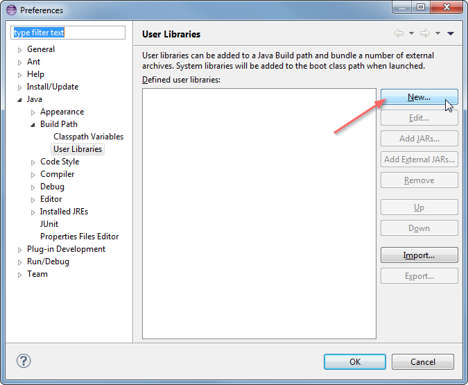
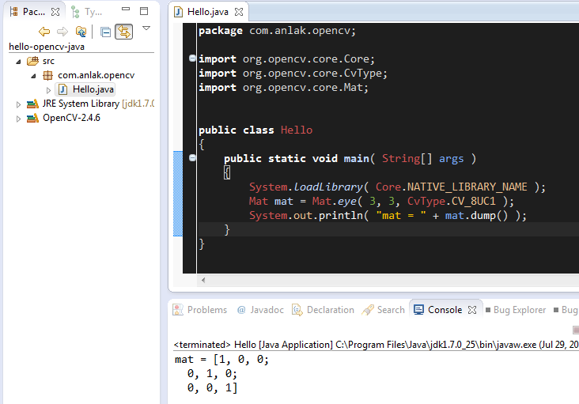

Using OpenCV Java with Eclipse
Since version 2.4.4 OpenCV supports Java. In this tutorial I will explain how to setup development environment for using OpenCV Java with Eclipse in Windows, so you can enjoy the benefits of garbage collected, very refactorable (rename variable, extract method and whatnot) modern language that enables you to write code with less effort and make less mistakes. Here we go.
Configuring Eclipse
First, obtain a fresh release of OpenCV from download page and extract it under a simple location like C:\OpenCV-2.4.6\. I am using version 2.4.6, but the steps are more or less the same for other versions.
Now, we will define OpenCV as a user library in Eclipse, so we can reuse the configuration for any project. Launch Eclipse and select Window> Preferences from the menu.

Navigate under Java> Build Path> User Libraries and click New….
Enter a name, e.g. OpenCV-2.4.6, for your new library.

Now select your new user library and click Add External JARs….

Browse through C:\OpenCV-2.4.6\build\java\ and select opencv-246.jar. After adding the jar, extend the opencv-246.jar and select Native library location and press Edit….

Select External Folder… and browse to select the folder C:\OpenCV-2.4.6\build\java\x64. If you have a 32-bit system you need to select the x86 folder instead of x64.

Your user library configuration should look like this:

Testing the configuration on a new Java project
Now start creating a new Java project.

On the Java Settings step, under Libraries tab, select Add Library… and select OpenCV-2.4.6, then click Finish.


Libraries should look like this:

Now you have created and configured a new Java project it is time to test it. Create a new java file. Here is a starter code for your convenience:
import org.opencv.core.Core; import org.opencv.core.CvType; import org.opencv.core.Mat; public class Hello { public static void main( String[] args ) { System.loadLibrary( Core.NATIVE_LIBRARY_NAME ); Mat mat = Mat.eye( 3, 3, CvType.CV_8UC1 ); System.out.println( "mat = " + mat.dump() ); } }
When you run the code you should see 3x3 identity matrix as output.
That is it, whenever you start a new project just add the OpenCV user library that you have defined to your project and you are good to go. Enjoy your powerful, less painful development environment :)